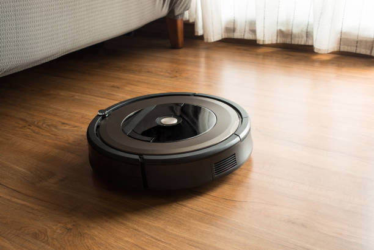
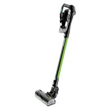
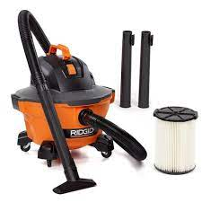

Red Bull (Bagged Canister Vacuum)

Advantages: Bagged canister vacuums typically feature a sealed bag system that prevents direct exposure to collected dust and debris.
This is beneficial for users with allergies or asthma, as it reduces the chance of allergens escaping during disposal.
Users can remove the sealed bag, discard it, and replace it with a new one without being exposed to the contents.
Bagged vacuums often come with multiple layers of filtration. In addition to the bag itself, there may be additional filters, such as HEPA filters, to trap smaller particles.
Best for: Quick spills, car cleaning, and small messes,Hardwood Floors,Carpets, Stairs
Green Latent (Bagless Upright Vacuum)

Advantages: Green Latent cleaners are known for their powerful suction and wide cleaning paths. They are great for deep cleaning carpets and large areas.
Bagless upright vacuums are suitable for households with frequent cleaning needs. Since they don't require the purchase of replacement bags, users can empty the dustbin more frequently without incurring additional costs.
If you prefer being able to see the amount and type of dirt and debris collected, a bagless vacuum with a transparent dustbin provides visibility, allowing you to know when it's time to empty the bin.
Best for: Homes with predominantly carpeted floors.
Disc Jumbo (Robot Vacuums)
Advantages: Disc Jumbo offer the freedom of movement without being tethered to an electrical outlet.
They allow users to schedule cleaning sessions or initiate them remotely through a smartphone app. This provides convenience for individuals with busy schedules.
Due to their compact size and ability to navigate under furniture, robot vacuums can reach areas that traditional vacuums might struggle to access.
When the battery is low, robot vacuums can automatically return to their charging station to recharge. This ensures that the device is ready for the next cleaning session.
Best for: Multi-Level Homes,Daily Maintenance,Tech-Savvy Users
Stick vacuums
Advantages: Stick vacuums are typically lightweight and easy to maneuver, making them ideal for quick cleanups and reaching tight spaces.
Stick vacuums are versatile and can often be used on various floor types, including hardwood, tile, and low-pile carpets. Some models come with attachments for added versatility.
Many stick vacuums are cordless, providing freedom of movement without being restricted by power cords. This feature is especially convenient for quick and hassle-free cleaning.
Best for:Their slim profile and compact design make stick vacuums easy to store in closets, under furniture, or in other small spaces.
Wet & Dry
 Advantages: Designed to handle both wet and dry debris.Useful for cleaning up liquid spills and dry messes.Commonly used in workshops and garages.
Suitable for cleaning a variety of surfaces, including hard floors, carpets, upholstery, and even wet surfaces like bathroom tiles.
Wet & dry vacuums are designed for easy maintenance, with features like removable and washable filters.
Best for:Valuable for tasks like flood damage restoration, where the vacuum can efficiently extract water from carpets and floors.
Commerical Auto

Advantages: Commercial/industrial vacuums are designed for heavy-duty use, offering powerful suction and high performance. They can handle large volumes of dirt and debris efficiently.
Built with durable materials, these vacuums are designed to withstand the rigors of frequent use in commercial and industrial settings. They are often more robust and have a longer lifespan than standard household vacuums.
Advanced filtration systems are common in commercial vacuums, ensuring that they capture fine particles and maintain indoor air quality in large spaces.
Best for: Retail Stores and Malls,Manufacturing and Industrial Facilities,Warehouses and Distribution Centers,Hotels and Hospitality.
exclusive 50% off for above products ,visit our stores!!